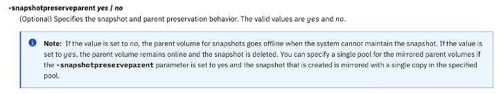
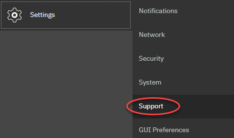
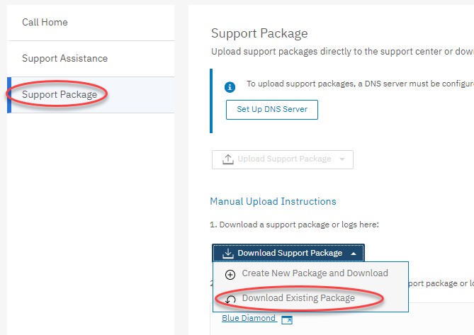

IBM FlashSystem
Documentation Links
Support Information
Find configuration limits and restrictions, release notes, and product documentation for IBM FlashSystem storage.
- Support Information for FlashSystem 9500
- Support Information for FlashSystem 9200
- Support Information for FlashSystem 7300
- Support Information for FlashSystem 7200
- Support Information for FlashSystem 5000 and 5200
- Support Center IPs
Implementation Guide
A great reference to use during initial implementation of a new FlashSystem
Best Practices Guide
Use these guides to ensure you are following best practices for zoning, copy services, host connectivity, etc.
- Performance and Best Practices Guide for IBM Storage Virtualize 8.6
- IBM FlashSystem and VMware Implementation and Best Practices Guide
Microcode Guidance
If you are upgrading microcode, use this link to determine the latest (LTS) recommended code level along with other levels that are available (non-LTS)
- Recommended Code Levels
- Supported Drive Types and Firmware Levels
- Download Microcode from IBM Fix Central
This link will show if you are able to upgrade directly to another code level, or if you have to upgrade in two steps.
Other Stuff
- CSM ESE Sizer
- Ansible and IBM Storage
- IBM Storage Ansible Modules
- Enable the VMware iSER Adapter
- Vdbench Downloads and User Guide
Cheat Sheet
-
List current date and time
svqueryclock -
Recover offline volumes (i/o group went offline and lose cache)
recovervdiskbysystem -
Manually resuming code activation
lsupdate applysoftware -continue -
Restart Web Service
satask restartservice -service tomcat -
IP Replication requires the following firewall ports opened:
- Cluster IPs: 3260
- Data IPs: 3265
-
Script to Rename Volumes
lsvdisk -nohdr | grep -v scsi | while read -a line ; do new_name=${line[1]//msc520/bscbak};new_name=${new_name%_01} ; chvdisk -name $new_name ${line[1]}; done -
Script to validate cabling
lsportfc -nohdr | while read -a port; do printf "%s,port%s," "${port[6]}" "${port[2]}"; lsportfc "${port[0]}" | grep fabric_WWN ; done
Implementation
Implementation Checklist
This is not an official instruction manual from IBM. Alway refer to the latest IBM docs if you are unsure about how to complete a step in the list below.{.is-info}
The following items are a summary of the most common steps that need to be completed on every implementation. Some items may not pertain to specific hardware configs (e.g. IP replication), but verifying installs using this list will cover the most critical aspects of a thorough implementation.
- Power Up
- Configure cluster using the technician port
- Use a web browser to open: https://your_management_IP
- Log in to the management GUI for the first time by using ID superuser and password passw0rd.
- After you log in, the initial setup wizard helps you get started. Use the information on your worksheets to inform your inputs.
- Welcome
- License Agreement
- Change Password
- System Name
- Licensed Functions
- Date and Time
- Encryption (license required)
- Call Home
- Storage Insights
- Support Assistance
- Automatic Configuration
- Summary
- Add additional Control or Expansion Enclosures (if required)
- Configure the following:
- Set the Service IPs
- Ethernet IPs for ISCSI or IP replication
- Ethernet Portsets
- Volume Protection (recommend leaving on)
- Call Home / Email Notifications
- SNMP
- Syslog
- LDAP (if desired)
- Enable Encryption (USB or SKLM)
- Create encrypted pool with data reduction turned off and 1024 extent size (default in GUI)
- Add storage to the pool (DRAID6, typically take all defaults in GUI).
- Modify I/O Group bitmap space (CLI or now in GUI of newer code)
- Modify fibre channel port masking (if needed for replication)
- Update System Software
- Update Drive Firmware
Policy-Based Replication
First, here’s a more detail on the steps required to configure PBR: https://www.ibm.com/docs/en/flashsystem-5x00/8.6.x?topic=5200-getting-started-policy-based-replication
- Create a Partnership The partnership definition tells the system what other system(s) it is allowed to communicate with for replication. It is similar to pprcpath on DS8k, but it really has nothing to do with paths. Paths are created strictly by what is zoned between the two systems. It’s just defining the partner system that is eligible to establish replication with and is defining the type (IP or Fibre Channel), speed, type of replication (legacy or policy based) and other variables…. When you create the partnership, the paths are auto created by whatever ports are zoned to each other on those two systems.
- Create a provisioning policy on each FlashSystem (optional) Let’s say you want all volumes to be created as thin-provisioned. You can create a policy for thin-provisioning and apply it to the pool on each FlashSystem. Then when replication creates volumes on the DR system, they will be thin provisioned. I believe you will want thick volumes, so you don’t need to do this step.
- Link Pools Once the partnership is established, the next step is to link pools between those two systems. This probably seems redundant for your implementation because each of your FS5200s only has a single pool; however, some larger systems can and do have multiple pools, or some companies create child pools for multitenancy, and you can link the child pools instead of linking the entire pool. Creating a chile pool is not required, and I DO NOT recommend it for your environment. It’s needless complexity that would not provide value.
- Create a Replication Policy This is simply a policy that dictates what partner to replicate to and what your desired RPO is. FlashSystems can have multiple partners, so this policy tell the volume group which one of those partners to use. If you only have one partner, you still have to create a policy defining that partner as the replication target.
- Create the Volume Group and Assign Replication Policy This is where the magic happens! You create the volume group on the system that you want be the source of the replication. Then, add the volumes to be replicated into that group. The volumes should be ones that you want to have consistency with each other (think Global Mirror session). Then, you simply apply the replication policy to the volume group and replication starts automatically. It takes care of creating the volumes on the target system, creating relationships, creating journal relationships, etc.
That’s it. Once you have done these 5 steps, only have to do step 5 for subsequent replication. Steps 1-4 are on-time setup only.
The process of reversing replication is simple, but maybe not intuitive. You correctly found Enable Access on the target system with pauses replication and makes the disk available on the target system (this is basically failoverpprc). The direction of replication when you restart it is simply based on which system you are logged into when you start replication after doing the enable access. This is similar to how the failbackpprc command works on DS8k. If you log into the target system and start replication from there, replication will be running in the reverse direction from the original (target --> source). If you log into the source system and start replication, it will resume from the original source --> target direction.
Port Planning
Port Allocation Table
| Adapter | Port | 4 ports | 8 ports | 12 ports | 16 ports | SAN Fabric |
|---|---|---|---|---|---|---|
| Adapter 1 | Port 1 | Host and Storage | Host and Storage | Host and Storage | Host and Storage | A |
| Adapter 1 | Port 2 | Host and Storage | Host and Storage | Host and Storage | Host and Storage | B |
| Adapter 1 | Port 3 | Intracluster and Replication | Intracluster | Intracluster | Intracluster | A |
| Adapter 1 | Port 4 | Intracluster and Replication | Intracluster | Intracluster | Intracluster | B |
| Adapter 2 | Port 1 | - | Host and Storage | Host and Storage | Host and Storage | A |
| Adapter 2 | Port 2 | - | Host and Storage | Host and Storage | Host and Storage | B |
| Adapter 2 | Port 3 | - | Intracluster or Replication | Replication or Host and Storage | Replication or Host and Storage | A |
| Adapter 2 | Port 4 | - | Intracluster or Replication | Replication or Host and Storage | Replication or Host and Storage | B |
| Adapter 3 | Port 1 | - | - | Host and Storage | Host and Storage | A |
| Adapter 3 | Port 2 | - | - | Host and Storage | Host and Storage | B |
| Adapter 3 | Port 3 | - | - | Intracluster | Intracluster | A |
| Adapter 3 | Port 4 | - | - | Intracluster | Intracluster | B |
| Adapter 4 | Port 1 | - | - | - | Host and Storage | A |
| Adapter 4 | Port 2 | - | - | - | Host and Storage | B |
| Adapter 4 | Port 3 | - | - | - | Replication or Host and Storage | A |
| Adapter 4 | Port 4 | - | - | - | Replication or Host and Storage | B |
| localfcportmask | 1100 | 11001100 or 00001100 | 110000001100 | 0000110000001100 | - | - |
| remotefcportmask | 1100 | 00000000 or 11000000 | 000011000000 | 1100000011000000 | - | - |
Host refers to host objects defined in the system. Replication refers to nodes that are part of a different cluster. Storage refers to controller objects defined in the system if external storage is being used. Intracluster refers to nodes within the same cluster. The word "and" indicates that both types are used. The word "or" indicates that one of the options must be selected. If using replication, preference should be given to replication. If a receives more than 16 logins from another node, then it causes node error 860.
You can ensure that no more than 16 logins are received by following these guidelines: Zone the SAN fabric to reduce the number of paths between the nodes. Apply a local Fibre Channel port mask (if the nodes are within the same system) or partner Fibre Channel port mask (if the nodes are in different systems) to reduce the number of ports that are being used for node-to-node communication. Provide a combination of the two (zoning and port masks). To avoid receiving node error 860 and to maximize performance on your system, follow these guidelines: For redundancy, use a minimum of two ports. If ports are being dedicated for different types of traffic, assign a minimum of two ports for each type of traffic. Within a system, up to 50% of the overall data that is transferred across the SAN is transmitted between the nodes. However, for read-intensive workloads, the figure is much less. Therefore, if ports are being dedicated for different types of traffic, assign between 1/4 and 1/2 of the overall ports for node-to-node communication within a system. For replication between systems, the connection between the systems is usually the bottleneck. Other than for redundancy, there is no point in having more SAN connections than there is bandwidth. For example, if two sites are connected with a 10 Gbps link, two 8 Gbps ports are sufficient. Systems usually are configured with two ports per node for replication traffic primarily for redundancy. For systems with larger numbers of nodes, it might be appropriate to have connections only from a subset of the nodes for replication to a remote system. The system automatically forwards replication traffic between local nodes so that all nodes can still participate in replication.
Safguarded Copy Implementation
What if the pools fills up?
There is a system wide setting that is set by using the chsystem command that will dictate what happens to safeguarded snapshots and their source volumes when you run out of space in the pool.
You can check your current setting by using the command
There are two options for snapshot behavior if the pool fills up.
- Default behavior is that the prod volume will go offline to protect the snapshots (similar to what happened when child pool filled up with the old safeguarded backups).
- Optional behavior is to keep the prod volumes online and have the oldest snapshot deleted: 
Spectrum Virtualize Remote Support IP Addresses
Firewall Configuration
Any firewall holes that were created to allow connections to the current IP addresses must be updated with the new IP addresses.
| Source | Target | Port | Protocol | Direction | |
|---|---|---|---|---|---|
| Existing Remote Support Servers These firewall holes can be removed once new servers are configured and running |
The service IP address of every node or node canister | 129.33.206.139 204.146.30.139 | 22 | ssh | Outbound only |
| New Remote Support Servers | The service IP address of every node or node canister | 170.225.126.11 170.225.126.12 170.225.127.11 170.225.127.12 |
22 | ssh | Outbound only |
IP address details
The new IP addresses for remote support are:
- 170.225.126.11 - xrsc-front-srv-1.southdata.ibm.com
- 170.225.126.12 - xrsc-front-srv-2.southdata.ibm.com
- 170.225.127.11 - xrsc-front-srv-3.eastdata.ibm.com
- 170.225.127.12 - xrsc-front-srv-4.eastdata.ibm.com
Fix Central Code Download - Firewall Configuration
IBM Announced in https://www.ibm.com/support/pages/node/6573219 that there would be a number of changes to some central support infrastructure.
Info
- Direct connection to Fix Central on port 22 was deprecated in V8.4.2. Systems running V8.4.2 or higher download code via esupport.ibm.com on port 443.
- The Fix Central DNS names were updated to point to the new IP addresses on 4 June 2022. Storage Virtualize devices use DNS to connect to Fix Central, therefore all connections will automatically be connecting to the new IP addresses.
| Source | Target | Port | Protocol | Direction | |
|---|---|---|---|---|---|
| New Fix Central IP addresses | The service IP address of every node or node canister | 170.225.126.44 | 22 | sftp | Outbound only |
Additional IBM Support IP address changes that do not affect Storage Virtualize products.
The following notification was sent out relating to additional IP address changes. These changes do not affect Storage Virtualize products
https://www.ibm.com/support/pages/node/6587781
Support Procedures
Export Config XML File
- Log into the GUI
- In the left menu, select Settings → Support 
- Select Support Package and click on the Download Support Package option and choose Download Existing Package 
- In the filter on the top right, enter
cron.xmland hit enter. Select the file, and click Download
- The file will be downloaded by your browser (typically to your Download folder).
Wiping a System to Return/Resell
Erase All Drives
- Delete all volumes and pools
-
Ensure all drives are in candidate use state
lsdrive -
Erase all drives using this script
lsdrive -nohdr | while read -a line ; do chdrive -task erase ${line[0]} ; done -
Verify erasure completion
lsdriveprogress
Reset System to Factory Defaults
- Delete all hosts, volumes, and pools
-
As superuser, ssh into the service IP node 1 and issue the following:
sainfo lsservicenodes satask startservice -force <node2_panel_name> satask startservice -force <node1_panel_name> -
Log back into node 1 service IP and issue the following (ensure both nodes are in service):
sainfo lsservicenodes satask leavecluster -force <node2_panel_name> satask leavecluster -force <node1_panel_name>
Note
The previous steps will reset the superuser password back to factory defaults. Use passw0rd as the password going forward
-
Log back into node 1 service IP and issue the following (ensure ‘cluster_id’, ‘cluster_name’, ‘node_name’ are blank):
sainfo lsservicenodes satask chvpd -resetclusterid <node2_panel_name> satask chvpd -resetclusterid <node1_panel_name> -
Reboot the nodes:
satask stopnode -reboot <node2_panel_name> satask stopnode -reboot <node1_panel_name> -
Log back into node 1 service IP and issue the following (both nodes should show 'node_status' as Candidate ):
sainfo lsservicenodes
Scripts
Determine Remote Copy Status
Objective
This script will list the progress of all remote copy relationships defined on the system. It will output the source volume name followed by the “progress” percentage.
Note
This is based on the OLD remote copy technology. This should not be used for Policy Based Replication
Script Syntax
lsrcrelationship -nohdr | while read -a relationship
do echo "Volume Name: "${relationship[5]}
lsrcrelationship ${relationship[0]}|grep progress
echo
done
Example output:
Volume Name: Thor_0
progress 99
Volume Name: Thor_1
progress 99
Volume Name: Thor_2
progress 99
Volume Name: Thor_3
progress 99
Volume Name: Thor_4
progress 99
Volume Name: Thor_5
progress 99
Volume Name: Thor_IASP1_0
progress 99
Volume Name: Thor_IASP1_1
progress 99
Volume Name: Thor_IASP1_2
progress 99
Volume Name: Thor_IASP1_3
progress 99
Volume Name: Thor_IASP1_4
progress 100
Validate Fibre Channel Host Connectivity Script
Objective
This script will display all of the SAN fabric connectivity for each defined Host and indicate what port the host is connected through.
Script Syntax
svcinfo lshost -nohdr|while read -a host
do
printf "\n%-20s\n" ${host[1]}
svcinfo lsnode -nohdr |while read -a node
do
printf "\nnode %s " ${node[1]}
for port in 1 2 3 4
do
printf "-"
svcinfo lsfabric -nohdr -host ${host[1]} |while read -a fabric
do
[[ ${fabric[2]} == ${node[0]} && ${fabric[5]} == $port ]] && printf "\b\033[01;3%dm$port\033[0m" $((${#fabric[7]}/2-1))
done
done
done
printf "\n"
done
Example output:
esx20
node node1 12--
node node2 12--
esx21
node node1 12--
node node2 12--
esx22
node node1 12--
node node2 12--
esx23
node node1 12--
node node2 12--
esx24
node node1 12--
node node2 12--
rick-w2019
node node1 --3-
node node2 --3-
esx11
node node1 12--
node node2 12--
test
node node1 -2--
node node2 -2--